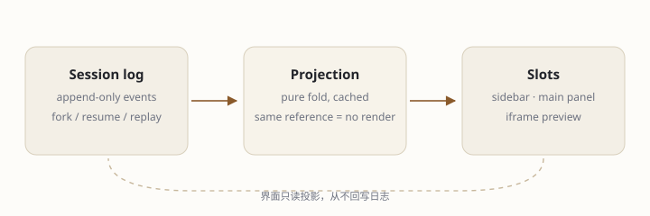

1. 会话日志
每一次模型请求、工具调用与结果都先落盘，再投影成界面。fork、resume、replay 都从日志推导，而不是从内存状态猜测。
会话日志是唯一事实来源，插件是围绕它生长的投影。
每一次模型请求、工具调用与结果都先落盘，再投影成界面。fork、resume、replay 都从日志推导，而不是从内存状态猜测。
插件不自己订阅事件重扫整个会话，而是注册纯函数的 projection，按事件增量折叠，引用不变就自动跳过重渲染。
能不加工具就不加工具：先用 restrict 收窄，再用 guard 拒绝，最后才考虑 waterfall 改写。

知识库是跨会话的长期资产：收藏、标签和阅读位置不随某个会话关闭而消失。因此它注册在左侧栏的全局入口上，而不是挂在单次会话的右侧栏。
外部样式、图片与字体都从原始目录按相对路径加载，HTML 不做任何重写。